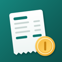

TipioSupport
Need help or found a bug? Email victor.kurilo@gmail.com. You'll get a reply from the developer, usually within two working days.
Common questions
What does "real hourly pay" include?
The tips you kept (card and cash, minus tip-out), your base pay for the hours worked, and any automatic gratuities, divided by your hours. Shifts logged without hours count toward your totals but not your hourly rate.
The tips you kept (card and cash, minus tip-out), your base pay for the hours worked, and any automatic gratuities, divided by your hours. Shifts logged without hours count toward your totals but not your hourly rate.
Why are automatic gratuities kept apart?
Automatic gratuities and service charges are paid as wages, not tips, so they don't count as qualified tips for the federal tip deduction. Tipio adds them to what you earned but keeps them out of your tip totals.
Automatic gratuities and service charges are paid as wages, not tips, so they don't count as qualified tips for the federal tip deduction. Tipio adds them to what you earned but keeps them out of your tip totals.
What's the monthly tip report?
If your tips at a job add up to $20 or more in a month, you report them to that employer by the 10th of the next month (IRS Publication 531). The Taxes tab shows each job's cash, card, paid-out and kept tips for last month and this month so far.
If your tips at a job add up to $20 or more in a month, you report them to that employer by the 10th of the next month (IRS Publication 531). The Taxes tab shows each job's cash, card, paid-out and kept tips for last month and this month so far.
Is Tipio tax advice?
No. It's for personal record-keeping only: a record of what you enter. Totals are estimates; your W-2 and a tax professional have the final word. Tipio doesn't file anything with the IRS or your employer, and it is not affiliated with or endorsed by the IRS.
No. It's for personal record-keeping only: a record of what you enter. Totals are estimates; your W-2 and a tax professional have the final word. Tipio doesn't file anything with the IRS or your employer, and it is not affiliated with or endorsed by the IRS.
How many jobs are free?
Two, for example a main job and a side gig, each with unlimited shifts. Tipio Pro adds a third job and more. You're never charged per job.
Two, for example a main job and a side gig, each with unlimited shifts. Tipio Pro adds a third job and more. You're never charged per job.
How do I move my history from another app?
Export a CSV from your old app or spreadsheet, save it to Files, then in Tipio › Settings tap Import CSV or restore a backup. Tipio reads columns like date, hours, start and end, cash tips, card or credit tips, tip-out, sales, wage and job. You'll see a preview first, and duplicates are skipped. Try it with this sample file.
Export a CSV from your old app or spreadsheet, save it to Files, then in Tipio › Settings tap Import CSV or restore a backup. Tipio reads columns like date, hours, start and end, cash tips, card or credit tips, tip-out, sales, wage and job. You'll see a preview first, and duplicates are skipped. Try it with this sample file.
How do I back up or move to a new iPhone?
Your shifts are included in your iPhone and iCloud backups. With Tipio Pro, iCloud backup brings them back by itself on a new iPhone signed in to the same Apple Account. For a copy of your own, turn on the daily copy to a folder when you set up Tipio (or in Settings › Backups › Daily copy to a folder) and pick a folder, such as one in iCloud Drive: Tipio saves a copy every day you log. On a new iPhone, choose the same folder and Tipio offers to restore your shifts. You can also tap Save a backup in Settings anytime and import that file later.
Your shifts are included in your iPhone and iCloud backups. With Tipio Pro, iCloud backup brings them back by itself on a new iPhone signed in to the same Apple Account. For a copy of your own, turn on the daily copy to a folder when you set up Tipio (or in Settings › Backups › Daily copy to a folder) and pick a folder, such as one in iCloud Drive: Tipio saves a copy every day you log. On a new iPhone, choose the same folder and Tipio offers to restore your shifts. You can also tap Save a backup in Settings anytime and import that file later.
Why is there an ad?
The free version shows one small ad from Google at the end of your shifts list, which keeps Tipio free. It never covers your numbers, and Tipio Pro removes it. To stop ad tracking: iPhone Settings › Privacy & Security › Tracking › Tipio. Where Google's consent rules apply, Tipio › Settings › Privacy & security › Ad privacy choices changes your ad consent or opts you out of targeted ads. Your shifts and tips are never shared.
The free version shows one small ad from Google at the end of your shifts list, which keeps Tipio free. It never covers your numbers, and Tipio Pro removes it. To stop ad tracking: iPhone Settings › Privacy & Security › Tracking › Tipio. Where Google's consent rules apply, Tipio › Settings › Privacy & security › Ad privacy choices changes your ad consent or opts you out of targeted ads. Your shifts and tips are never shared.
How do I restore Pro or cancel a subscription?
Restore: Tipio › Settings › Subscription & purchases › Restore purchases, with the same Apple Account. Cancel: Tipio › Settings › Manage subscription (or iPhone Settings › your name › Subscriptions › Tipio Pro), at least 24 hours before the trial or period ends. Deleting the app, your data or your Tipio account doesn’t cancel it. Your purchase history is in Settings › Subscription & purchases.
Restore: Tipio › Settings › Subscription & purchases › Restore purchases, with the same Apple Account. Cancel: Tipio › Settings › Manage subscription (or iPhone Settings › your name › Subscriptions › Tipio Pro), at least 24 hours before the trial or period ends. Deleting the app, your data or your Tipio account doesn’t cancel it. Your purchase history is in Settings › Subscription & purchases.
How do I delete my data or my account?
Tipio › Settings › Delete all data (the last row) erases your shifts, jobs and settings from this iPhone; with Pro you choose whether your iCloud copies go too. Settings › Backups › iCloud backup can delete the iCloud copies on their own. If you signed in, Settings › Account › Delete account deletes the account from our server (it doesn't cancel a subscription). Deleting the app removes everything it stored on the iPhone. To ask what we hold about you, or to have it deleted or corrected, email us with "Privacy request" in the subject. Details: Privacy Policy.
Tipio › Settings › Delete all data (the last row) erases your shifts, jobs and settings from this iPhone; with Pro you choose whether your iCloud copies go too. Settings › Backups › iCloud backup can delete the iCloud copies on their own. If you signed in, Settings › Account › Delete account deletes the account from our server (it doesn't cancel a subscription). Deleting the app removes everything it stored on the iPhone. To ask what we hold about you, or to have it deleted or corrected, email us with "Privacy request" in the subject. Details: Privacy Policy.